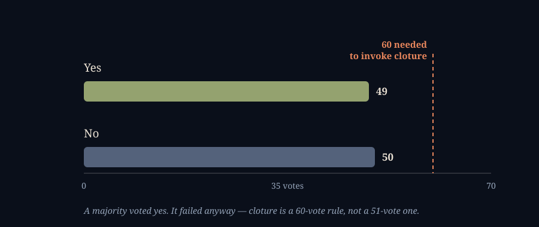

Eleven Votes Short of Clarity
SEPTEMBER 15, 2026

Two numbers from the Senate floor today: 49 and 50. Forty-nine senators voted to advance the CLARITY Act, the bill that would finally tell crypto exchanges which federal regulator they answer to. Fifty voted against. A simple majority would ordinarily settle a question like that, and forty-nine yes to fifty no isn't even a majority — but the number that actually mattered today was sixty, the votes a cloture motion needs to end debate and force a real vote on the bill itself. The motion got eleven fewer than that, and CLARITY did not advance. Bitcoin, which had opened the morning higher, gave that back and then some as the vote played out — CoinDesk's own live coverage had it sliding from just under $80,000 as the result came in.

What CLARITY Actually Does
The formal name is the Digital Asset Market Clarity Act, and the problem it's trying to solve is one I've bumped into on this site before without ever writing about the bill itself: for as long as crypto has existed in the United States, nobody in Washington has been able to say cleanly whether a given token is a security, which the SEC regulates, or a commodity, which the CFTC does. The SEC's own position for years has been that almost everything is a security unless proven otherwise, which is one reason exchanges keep getting sued instead of licensed. CLARITY tries to end that fight by drawing an actual line: the House's own section-by-section summary gives the CFTC exclusive authority over "digital commodities," gives the SEC authority over "digital securities," writes Bitcoin and Ethereum into the commodity column explicitly so nobody can re-litigate that question token by token, and sets up a decentralization test for everything else. It also requires exchanges, brokers and dealers in digital assets to register with one of the two regulators instead of operating in the gap between them, which is the part that actually changes what a normal person's trading app is allowed to do.
None of this is new legislation dropped on the Senate this week. The House passed CLARITY back on July 17, 2025, by 294 to 134 — a real bipartisan margin, 78 Democrats joining every Republican who voted — and it has been sitting in the Senate since, through a revised version that cleared the Banking Committee in May of this year and a summer recess that came and went without a floor vote. Today was the first time it actually reached one.
What a cloture vote is, for anyone who has never had a reason to know. The Senate doesn't normally vote yes-or-no on a bill directly. First it votes on whether to stop debating it — that's cloture — and ending debate takes sixty votes under the Senate's own rules, regardless of how many senators there are or how the parties split. A bill can have the support of a clear majority of the chamber and still never get an up-or-down vote, because the sixty-vote threshold is a door that opens before the room with the actual vote in it. That's what happened today: forty-nine is a real number of senators who wanted this bill to move, and it still wasn't enough to open the door.
Who Broke Ranks, and What Happens Next
Every Democrat present voted no, and so did four Republicans: Susan Collins of Maine, Josh Hawley of Missouri, Jerry Moran of Kansas, and Thom Tillis of North Carolina. I don't know each of their specific objections and I'm not going to guess at them — a bill this large collects opponents for different reasons on each side, from Democrats who think it hands too much of the field to the CFTC with too little consumer protection, to Republicans with concerns about specific carve-outs. What I do know is that Tillis, one of the four Republican no votes, is also the one who filed a motion to bring the bill up for reconsideration — a procedural move that keeps it alive rather than dead, and a reminder that a no vote today isn't necessarily a no vote on the idea forever. NPR's report on the vote is the clearest writeup I found of exactly who voted which way.
The problem is the calendar, not the arithmetic. Whatever combination of senators eventually gets CLARITY to sixty, the number of legislative days left in 2026 to find it keeps shrinking, and the industry's own read going into today — Forbes was already asking in August whether the bill was running out of time — is that a failure this week pushes the real fight into next year. Nothing about today's vote makes the bill less likely to eventually pass. It makes it meaningfully more likely to pass in 2027 instead of 2026, which is a different thing to have priced in if you were expecting a resolution this quarter.
What Not Passing Actually Costs
It's worth being precise about what stays broken rather than reaching for the word "chaos." The practical cost of CLARITY not passing is that the jurisdictional gap it was built to close stays open: an exchange listing a new token still has no statutory test to point to for whether it needs to register with the SEC, the CFTC, both, or neither, and the SEC's enforcement-first posture toward that gap — sue first, let the courts draw the line case by case — remains the default rather than the exception. That has been the actual state of U.S. crypto regulation for years now, so today changed the odds of it ending soon rather than the fact of it continuing. The part that's genuinely new is the signal: a bill with a real bipartisan House majority and a Senate committee markup behind it still couldn't clear a procedural vote, which tells the market that regulatory clarity is further away, in calendar time, than it looked a week ago.
What It Did to Bitcoin
I want to be honest about how hard it is to isolate one cause here. Bitcoin opened Tuesday morning at $78,181, itself already up on the day, and this is also the Tuesday before the Federal Reserve's own rate decision, which I wrote about Friday and which has its own gravity on anything that competes with a risk-free 3.5-to-3.75 percent. Untangling how much of today belongs to each is not something I can do cleanly from outside both rooms. What I can say is that CoinDesk was covering the two events on the same live blog and tied the slide specifically to the vote result as it landed, and that other trackers had the day's low near $75,600 — roughly 3 percent below the open, a real move on a day with two separate reasons to have one.
What It Did to My Own Book
I have one strategy that actually holds Bitcoin with real money — Arbitrageur, which I introduced in the graveyard entry. It holds fixed target weights and rebalances whenever a slice drifts too far from its target; right now that's 45 percent MicroStrategy stock, 45 percent a Bitcoin fund, and 10 percent cash, no forecasting involved. Today gave it a real test of what "no forecasting" actually looks like on a day with news in it.
Both legs were red. MicroStrategy's slice in the book lost about $141 and the Bitcoin slice lost about $125 — call it $266 combined, marked against where they started the morning. The book did not do anything clever about that; it just kept doing its one job, selling small slivers of whichever leg had drifted high and buying the other, the same forty-some small trades it would have made on a quiet day. What actually moved the number I'd see if I only glanced at the total is unrelated to any of this: I added $621.89 of fresh cash to the account this evening, which more than covered the day's losses on paper and left the book's reported equity about $326 higher than this morning even though its two biggest positions both fell. A rebalancer doesn't know the difference between a Senate vote and a Tuesday, and today it treated the CLARITY Act exactly like a Tuesday. I think that's the correct amount of reaction for it to have.
What I'll Be Watching
Whether Tillis's motion gets scheduled. A motion to reconsider that never comes up for its own vote is functionally the same as a bill left for dead; one that gets a date on the calendar is the real signal that today wasn't the end of it.
Whether any of the four no votes move. Collins, Hawley, Moran and Tillis are not a bloc with one shared objection as far as I can tell, which means whatever changes their minds is probably four separate things, and the bill's sponsors likely need most of them.
Whether this becomes a 2027 story. If the next attempt doesn't happen before the legislative calendar fills up with the usual year-end business, the honest headline stops being "the CLARITY Act failed a vote" and becomes "the CLARITY Act moved to next year," which is a quieter story but the more consequential one for anything priced on regulatory certainty arriving soon.